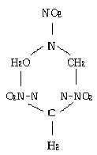
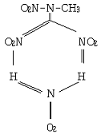
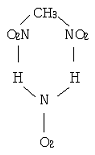
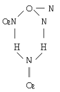
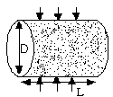
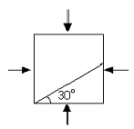

화약류관리산업기사 (2002-09-08 기출문제)
1과목: 일반화약학
1. 니트로글리콜 1kg이 폭발할때의 힘(F)을 1atm에서 구하시오. (단, 니트로글리콜의 폭발온도는 5, 100도K이다.)
- 13.765
- 2.751
- 10
- 1000
(정답률: 알수없음)
2. 자연발화 또는 자연폭발을 일으킬 수 있는 화약류는?
- 도화선
- AN-FO 폭약
- 무연화약
- 뇌관
(정답률: 알수없음)

3. Tetryl의 화학 구조식으로 옳은 것은?




(정답률: 알수없음)
4. 다음중 감열소염제로 주로 사용되는 것은?
- 질산암모늄
- 니트로 글리세린
- 규소철
- 식염
(정답률: 알수없음)
5. 도화선의 심사는 무엇을 사용하는가?
- 면사
- 지사
- 마사
- 견사
(정답률: 알수없음)
6. 나프탈렌을 니트로화 할 때 니트로기의 치환 위치는 어디인가?
- β-위치
- α-위치
- 0-위치
- P-위치
(정답률: 알수없음)
7. 도폭선의 심약으로 쓰이지 않는 것은 어느 것인가?
- 티엔티(TNT)
- 테트릴(Tetryl)
- 피이티엔(PETN)
- 피크린산(Picric acid)
(정답률: 알수없음)
8. 다음 내용 가운데 카알리트에 관하여 옳은 것은 어느 것인가?
- 남카알리트는 흑카알리트에 KNO3를 가하여 발생가스를 적게 하도록 만들어진 것이다.
- 카알리트는 과산화납을 주로 하는 폭약이다.
- 카알리트는 장기 저장이 가능하며 온도에 의한 품질의 변화가 적다.
- 흑카알리트는 후가스가 양호하며 유독가스가 없으므로 갱내용으로 쓴다.
(정답률: 알수없음)
9. 폭발온도를 저하시키기 위하여 첨가시키는 소염제는?
- KClO4
- Ba2B4O7 ㆍ10H2O
- Hg(ONC)2
- Pb(N3)2
(정답률: 알수없음)
10. ANFO 폭약의 원료로서 가장 적합한 질산암모늄의 형태는?
- 저비중 가루모임
- 저비중 다공질 알갱이 모양
- 고밀도 알갱이 모임
- 고밀도 다공질 알갱이 모양
(정답률: 알수없음)
11. 다음 화약류중 소량으로도 화염등 고열원에 의하여 폭발할 위험성이 있는 것은?
- 흑색화약
- 질산암모늄폭약
- 피크린산
- 트리니트로 톨루엔
(정답률: 알수없음)
12. 다음 질산 Ester 화합물은 어느 것인가?
- picric acid
- Hexogen(RDX)
- Nitrocellulose
- Tetryl
(정답률: 알수없음)
13. 백색의 주상결정으로 충격에 예민하고 마찰에는 둔감하고 점화는 어렵지만 뇌관에 민감한 이 폭약은 어떤 것인가?
- C10H6(NO2)2
- C6H5(NO2)2
- C(CH2NO2)4
- C6H2(NO2)3Cl
(정답률: 알수없음)
14. 다음 화약류에 관한 설명으로 옳은 것은?
- 전기뇌관으로 폭발시킬때는 도통시험을 생략할 수 있다.
- 도화선은 습윤상태로 분해하든지 또는 연소처리 하여야 한다.
- 폭발처리를 할 때에 한하여 폐기장소에 붉은기를 게양하고 또 감시원을 두지 않는다.
- 동결다이너마이트는 완전히 용해한 후 폭발처리 하든지 또는 500g 이하 순차 연소처리 한다.
(정답률: 알수없음)
15. 다음 화약류 중 폭연하는 것은?
- 무연화약
- DDNP
- TNT
- ANFO
(정답률: 알수없음)
16. 다음중 물속에 수일간 넣어 두어도 감도의 변화가 없는 화약은?
- 질산암모늄 폭약
- 교질다이너마이트
- ANFO
- 흑색화약
(정답률: 알수없음)
17. 동결된 다이너마이트의 사용법이 옳은 것은?
- 난로주위에서 직접 융해시켜 사용
- 50℃ 이하의 온수가 있는 융해기로 처리후 사용
- 두들겨 융해시켜 사용
- 불꽃에 직접 융해시켜 사용
(정답률: 알수없음)
18. 안정도시험에 속하지 않는 것은?
- 유리산시험
- 내열시험
- 탄진시험
- 가열시험
(정답률: 알수없음)
19. 다이너마이트를 연주시험 후 확대된 구멍에 물을 부어 부피를 측정한 결과 측정치가 350cm3였다. 다이너마이트의 연주확대값은 얼마인가?
- 280cm3
- 289cm3
- 294cm3
- 299cm3
(정답률: 알수없음)
20. Nonel의 특징이 아닌 것은?
- 노넬튜브는 연결 작업이 신속하다.
- 노넬튜브는 전파 에너지에 약하다.
- 노넬 튜브는 기계적 에너지에 강하다.
- 노넬튜브는 낙뢰에 안전하다.
(정답률: 알수없음)
2과목: 발파공학
21. 전기발파를 행할 때에는 다음 각사항의 규정을 지켜야 한다. 다음중 틀린 것은?
- 발파기 사용을 원칙으로 한다.
- 전원을 동력선 또는 전동선으로 할 때에는 1암페어 이상의 적당한 전류가 흐르도록 한다.
- 발파기의 핸들은 고정식은 시건장치를 하고, 이탈식은 발파작업 책임자가 휴대한다.
- 발파모선은 점화할때까지 발파기에 접속하는 측의 끝은 개방하고, 반대의 끝은 단락시킨다.
(정답률: 알수없음)
22. 장약량 600g으로 누두공 n=1.2가 되었다. 동일 암석층에서 같은 최소저항선으로 n=1인 폭파 누두공이 되도록 하기 위해서라면 장약량 600g에 대한 몇 %의 장약량이면 되겠는가?
- 25%
- 42%
- 66%
- 75%
(정답률: 알수없음)
23. 2m3의 채석을 하는데 250gr의 폭약이 사용되었다. 5m3의 채석에 필요로 하는 폭약량은 몇 g인가?
- 35.7g
- 100g
- 625g
- 750g
(정답률: 알수없음)
24. 뇌관의 일부분이 들어간 것은 무슨 효과를 이용한 것인가?
- 차프만 효과
- 홉킨슨 효과
- 노이만 효과
- 톰슨 효과
(정답률: 알수없음)
25. 하우저의 발파 기본식에 관한 설명 중 틀린 것은?
- 발파계수는 누두공의 크기와 형상에는 관계가 없다.
- 폭약위력계수는 위력이 큰 폭약일수록 커진다.
- 암석계수는 암석의 발파에 대한 저항성을 나타내는 계수이다.
- 전색계수는 밀폐상태가 불완전하게 됨에 따라 커진다.
(정답률: 알수없음)
26. 다음은 각각의 부분별 불발원인을 설명한 것이다. 맞지 않는 것은?
- 발파선 : 절연불량 또는 일부분 절단이 원인으로 불발이 된다.
- 뇌관 : 점폭약의 부족, 습윤, 백금선의 절단, 전기저항의 이상 등으로 불발의 원인이 된다.
- 폭약 : 습윤, 동결 또는 Dynamite등의 노화로 인해 불발의 원인이 된다.
- 발파법 : 결선법의 부적당, 발파기의 용량부족의 원인으로 불발의 원인이 된다.
(정답률: 알수없음)
27. 다음중 발파진동의 크기에 영향을 가장 적게 주는 것은?
- 폭약의 종류
- 전색방법
- 지발당 장약량
- 발파지점으로부터의 거리
(정답률: 알수없음)
28. 고압주수의 발파에 대한 내용중 맞지 않는 것은?
- CH4 가스 및 탄진발생이 적어진다.
- CH4 가스 및 탄진의 착화위험이 적어진다.
- 괴탄율이 적어진다.
- 주수에 의한 석탄의 유연화로 소량의 폭약을 사용해도 발파효과가 증대한다.
(정답률: 알수없음)
29. 다음중 Emulsion 폭약에 관한 설명 중 옳지 않은 것은?
- 주체로서 Glass-micro-balloom과 같은 무기질 중공구체가 쓰인다.
- 물이 연속상, 기름이 분산상으로 구성되어 있다.
- 함수폭약의 일종이다.
- 구성성분으로 AN, SN, HNO3등이 있다.
(정답률: 알수없음)
30. 보통화강암(g=1.0)에 젤라틴 다이너마이트(e=1.0)를 사용하여 최소저항선 W=1.5m에서 시험발파를 하고자 할때 표준 장약량은? (단, 적색은 완전하다.)
- 1.15kg
- 1.45kg
- 2.31kg
- 3.25kg
(정답률: 알수없음)
31. 다음중 홉킨슨 효과에 의한 파괴와 가장 관련이 깊은 것은?
- 인장파괴
- 압축파괴
- 전단파괴
- 휨파괴
(정답률: 알수없음)
32. 다음 조건하에서 폭약을 선택했을 때 틀리는 것은?
- 발파대상의 암석이 굳어 있어 폭력이 강한 폭약을 선택했다.
- 발파장소가 도심이거나 진동이 파급되어서 안되는 곳에서 저폭력의 폭약을 선택하였다.
- 겨울에는 낮은 기온으로 인해 내한성 폭약을 선택하였다.
- 지하수가 많은 갱내에서 ANFO폭약을 사용하였다.
(정답률: 알수없음)
33. 다음중 폭풍압 감소대책이 아닌 것은?
- 완전전색을 한다.
- 지발당 장약량을 감소시킨다.
- 정기폭을 한다.
- 방음벽을 설치한다.
(정답률: 알수없음)
34. 대발파를 하는 경우 사전에 검토해야 할 사항이 아닌 것은?
- 화약류의 종류
- 당해 지역의 지형 및 암질
- 약실의 위치 및 대피장소
- 유해가스로 인한 위험성 제거
(정답률: 알수없음)
35. 다음 터널발파의 심발 발파 방식중 그 성격이 다른 것은?
- Double v-cut
- Pyramid cut
- Fan cut
- Cylinder cut
(정답률: 알수없음)
36. 다음중 수직천공과 비교하여 경사천공의 장점이 아닌 것은?
- Back break 감소
- 양호한 파쇄율
- 정확한 경사각 유지
- 느슨한 암석의 자유면 보호
(정답률: 알수없음)
37. 어떤 폭약(지름 30mm, 중량 100g)의 사상 순폭 시험을 한 결과 최대순폭 거리가 165mm 이었다. 이때의 순폭도는?
- 6.5
- 5.5
- 4.5
- 3.5
(정답률: 알수없음)
38. 환경부에서 정한 생활진동 규제기준(단위 dB(V))에 의하면 주거지역 및 학교, 병원, 공공 도서관 지역에서 주간 (06:00 ～22:00)에 진동기준치는 얼마로 제한되어 있는가?
- 55이하
- 60이하
- 65이하
- 70이하
(정답률: 알수없음)
39. 심발 발파공의 공경은 모두 같고 저항선과 15°각도를 가지며, 저항선 W1 = 1.8m 이며, 동일 공경의 확대 발파의 저항선 w = 45cm 일 때 심발발파의 공수는?
- 3공
- 5공
- 6공
- 7공
(정답률: 알수없음)
40. 인접공 발파에 의한 cut off 현상의 일반적인 발생원인가 거리가 먼 것은?
- 천공간격이 협소할 때
- 기폭약포 위치가 너무 공저 가까이 있을 때
- 암반에 예기치 못한 균열이 있을 때
- 갱내 심발발파에서 주변공의 장약이 길 때
(정답률: 알수없음)
3과목: 암석역학
41. 하중을 주기적으로 반복하여 받으면 단축일축강도 이하의 수준에서도 파괴가 일어나는 것을 무엇이라고 하는가?
- 크립
- 피로
- 항복
- 히스테리시스
(정답률: 알수없음)
42. 응력을 일정하게 유지할 때 변형률이 시간에 따라 증가하고, 응력을 제거하면 변형이 회복되지 않고 영구 변형률로 남는 물체의 거동은?
- 점성거동
- 소성거동
- 탄성거동
- 탄소성거동
(정답률: 알수없음)
43. 유체가 암석을 통과할 때 통과용이성을 나타내는 삼투율 K에 대한 설명중 틀린 것은?
- K는 유체의 체적 통과 속도에 비례한다.
- K는 유체의 정점성 계수에 비례한다.
- K는 두점사이의 압력차와 관계가 없다.
- 어느 암석의 1변 1cm의 정방형 단면을 정점성계수 1cP 의 유체가 20℃에서 1cm에 1기압의 압력차가 있는 상태로 통과시 K는 1Darcy 이다.
(정답률: 알수없음)
44. 다음의 파괴론중에 중간 주응력을 고려하지 않은 것은?
- Nadai 이론
- Von Mises 이론
- Huber-Hencky 이론
- Mohr 이론
(정답률: 알수없음)
45. 다음중에서 터널 계측항목이 아닌 것은?
- 내공변위
- 외공변위
- 지중변위
- 천단침하
(정답률: 알수없음)
46. 삼축압축시험에 관한 설명중 맞는 것은?
- 봉압이 증가하면 암석의 파괴강도는 증가한다.
- 세 개의 주응력 중 두 개의 주응력이 0인 상태이다.
- 대기압 하에서 행하는 실험법이다.
- 측압이 증가하면 Poisson 비는 감소한다.
(정답률: 알수없음)
47. 수압파쇄시험을 통하여 얻을 수 있는 자료가 아닌 것은?
- 암반내 최대수평응력
- 암반내 최소수평응력
- 암반의 압축강도
- 암반의 인장강도
(정답률: 알수없음)
48. 정육면체의 각 면에 균일한 수직응력 σx=500kg/cm2, σy=300kg/cm2, σz=200kg/cm2를 받을 때 X축 방향 의 변형율은 얼마인가? (단, young율 e=2.0×105kg/cm2, 포와송비 v=0.3)
- 1.75×10-3
- 3.25×10-3
- 1.62×10-3
- 5.83×10-3
(정답률: 알수없음)
49. 그림과 같이 원주형 암석시험편에 대한 간접인장시험에서 파괴 사하중 P=2.5ton이라면 이암석의 인장강도는 얼마인가? (단, C=50mm, L=25mm, π=3.14 이다.)

- 2.5ton
- 127kg/cm2
- 64kg/cm2
- 100kg/cm2
(정답률: 알수없음)
50. 역학적 모형중 St.Venant 모형은 다음 중 어느 것인가?
- Spring과 Slider 가 병렬로 된 복합체
- Spring과 dashpot 가 직렬로 된 복합체
- Spring과 Slider 가 직렬로 된 복합체
- Spring과 dashpot 가 병렬로 된 복합체
(정답률: 알수없음)
51. 동일 암석으로 같은 조건 하에서 동일한 단면적과 높이를 가진 다음 시험편의 단축 압축강도 시험을 했을 때 어느 시험편의 강도가 가장 강한가?
- 단면이 3각형
- 단면이 4각형
- 단면이 6각형
- 단면이 원형
(정답률: 알수없음)
52. 원주형 시험편을 사용하여 압축강도 시험을 할 때 다음의 종횡비 중 좌굴현상이 가장 큰 것은?
- 1배
- 2배
- 4배
- 6배
(정답률: 알수없음)
53. 암석 포아송 비(Poisson's ratio)는 보통 얼마인가?
- 0.01 - 0.03
- 0.2 - 0.3
- 1 - 3
- 10 - 30
(정답률: 알수없음)
54. 지름 4cm, 길이 8cm인 원주형 암석 시편을 축방향으로 가압하였더니 12.56톤에서 파괴 되었다. 압축 강도는 얼마인가?
- 250kg/cm2
- 392.5kg/cm2
- 785kg/cm2
- 1000kg/cm2
(정답률: 알수없음)
55. 암석에 열을 가해서 온도가 상승하면 그의 탄성은 어떻게 변하는가?
- 커진다.
- 작아진다.
- 변화가 없다.
- 커지거나 작아진다.
(정답률: 알수없음)
56. 화강암을 구성하는 광물 중에서 가장 풍화에 강한 것은 어느 것인가?
- 석영
- 장석
- 휘석
- 감람석
(정답률: 알수없음)
57. 어느 암석의 강성율이 0.9×106kg/cm2 이고, 포아송 수가 4이면 이 암석의 탄성율은 얼마인가?
- 1.8×106kg/cm2
- 2.25×106kg/cm2
- 2.85×106kg/cm2
- 3.6×106kg/cm2
(정답률: 알수없음)
58. σx=800kg/cm2, σy=500kg/cm2, τxy200kg/cm2일 때 최대주응력과 최소주응력은 각각 얼마인가?
- 900kg/cm2, 400kg/cm2
- 800kg/cm2, 200kg/cm2
- 1000kg/cm2, 300kg/cm2
- 1300kg/cm2, 300kg/cm2
(정답률: 알수없음)
59. 도면에서와 같이 평면요소에 σx=10MPa, σy=4MPa의 수직응력이 작용하는 경우, 경사면위에 발생하는 수직응력은 얼마인가?

- 5.5MPa
- 8.5MPa
- 11.5MPa
- 13.5MPa
(정답률: 알수없음)
60. 직경 3cm인 원주형 시편에 인장력 3000kg이 가해지고 있다. 시편 내부에 작용하는 최대전단응력(τmax)과 그 경사면에 작용하는 법선응력은?
- τmax=175.2kg/cm2, σn=175.2kg/cm2
- τmax=175.2kg/cm2, σn=197.5kg/cm2
- τmax=212.3kg/cm2, σn=212.3kg/cm2
- τmax=212.5kg/cm2, σn=424.6kg/cm2
(정답률: 알수없음)
4과목: 화약류 안전관리 관계 법규
61. 운반신고를 하지 아니 하고도 운반할 수 있는 것은?
- 총용뇌관 10만개
- 도폭선 2000m
- 화약 2kg
- 폭약 1kg
(정답률: 알수없음)
62. 화약류단속관계법상 화약류관리 보안책임자 면허를 취소하는 경우에 속한 것은?
- 화약류를 취급함에 있어 중대한 과실로 폭발 등의 사고를 일으켜 사람을 죽거나 다치게한 때
- 국가기술자격법에 의하여 자격이 정지된 때
- 면허를 다른 사람에게 빌려준 때
- 지방경찰청장이 실시하는 교육에 참석하지 않았을 때
(정답률: 알수없음)
63. 화약류 폐기의 기술상 기준으로 맞지 않은 것은?
- 해안으로부터 8kg 떨어진 깊이 300m 이상의 바다밑에 가라 앉도록 할 것
- 화약 또는 폭약은 조금씩 폭발 또는 연소 시킬 것
- 도화선은 땅속에 매몰하거나 습윤상태로 분해 처리 할 것
- 도폭선은 공업용뇌관 또는 전기뇌관으로 폭발 처리 할 것
(정답률: 알수없음)
64. 꽃불류를 발사통에 넣을 때 가장 옳은 방법은?
- 손으로 서서히 밀어 넣는다.
- 끈을 사용하여 서서히 넣는다.
- 부드럽게 물을 섞어 넣는다.
- 다짐 봉으로 서서히 밀어 넣는다.
(정답률: 알수없음)
65. 저장소 지반의 두께 기준 중 저장하는 폭약이 25톤 이하일 경우 지반의 두께는 얼마 이상이어야 하는가?
- 29m
- 28m
- 26m
- 24m
(정답률: 알수없음)
66. 화약류저장소와 보안 물건간의 보안거리중 화약류 1급저장소에 폭약 40ton을 저장하려면 관련 법령상 최소한 몇 m 이상의 거리를 두어야 하는가? (단, 보안물건은 고압전선이다.)
- 520
- 440
- 260
- 170
(정답률: 알수없음)
67. 재해의 예방 또는 공공의 안전을 위하여 행정자치부령이 정하는 바에 따라 경찰서장이 안전교육을 실시하는 항과 거리가 먼 것은?
- 3급 화약류저장소 설치자
- 석궁사격장 설치자
- 화약류판매업을 하는 사람
- 공기총소지허가를 받은 사람
(정답률: 알수없음)
68. 돌침 또는 가공선은 피보호 건물의 상단으로부터 돌침의 상단 까지의 높이는 최소 몇 m 이상으로 설치하여야 하는가 ? (단, 피뢰장치에 한함)
- 10m
- 7m
- 5m
- 3m
(정답률: 알수없음)
69. 동일차량에 함께 실을 수 있는 것중 “화약” 과 같이 실을 수 없는 것은?
- 신관(포경용제외)
- 실탄(공포탄포함)
- 전기뇌관(특별용기에 있는 것)
- 도폭선
(정답률: 알수없음)
70. 지하에 설치하는 2급 저장소의 위치, 구조 및 설비기준과 가장 거리가 먼 것은?
- 안쪽 벽은 철근콘크리트로 할 것
- 저자소에는 피뢰장치를 할 것
- 저장소 내부는 판자로 하고 마루표면 또는 콘크리트 바닥에는 철물류가 나타나지 아니 하도록 할 것
- 언덕의 경사면 또는 터널 안쪽 벽에 홈을 파고 저장소를 설치할 때 에는 그 저장소의 안쪽 벽을 콘크리트 또는 나무의 이중판자로 할 것
(정답률: 알수없음)
71. 화약류를 운반하는 사람이 화약류 운반 신고필증을 지니지 아니하였을 경우 처벌내용으로 맞는 것은?
- 2년이하의 징역 또는 200만원이항의 벌금
- 3년이하의 징역 또는 300만원이하의 벌금
- 500만원이하의 벌금
- 300만원이항의 과태료
(정답률: 알수없음)
72. 2급 저장소의 화약류 최대 저장량으로 틀린 것은?
- 도폭선 : 500km
- 실탄 및 공포탄 : 2000만개
- 총용뇌관 : 500만개
- 전기뇌관 : 1000만개
(정답률: 알수없음)
73. 화약류관리 보안책임자가 행할 수 있는 일과 가장 거리가 먼 것은?
- 발파현장의 작업보조자를 정한다.
- 발파시 경계업무를 수행한다.
- 천공방법을 지시한다.
- 약실에 대한 화약류의 장전방법을 지시한다.
(정답률: 알수없음)
74. 다음은 화약류와 관련된 관계법에 대한 내용을 서술한 것이다. 틀린 항목은?
- 화약류를 수입한 사람은 지체없이 행정자치부령이 정하는 바에 의하여 수입지를 관할하는 경찰서장에 신고하여야 한다.
- 화공품을 수출 또는 수입하고자 하는 사람은 행정자치부령이 정하는 바에 의하여 그때마다 경찰청장의 허가를 받아야 한다.
- 화약류의 제조업을 영위하고자 하는 사람은 제조소마다 행정자치부령이 정하는 바에 의하여 경찰청장의 허가를 받아야 한다.
- 화약류 판매업을 영위하고자 하는 사람은 판매소마다 행정자치부령이 정하는 바에 의하여 판매소의 소재지를 관할하는 지방경찰청장의 허가를 받아야 한다.
(정답률: 알수없음)
75. 질산에스테르 및 그 성분이 들어 있는 화약으로서 제조일이 366일 지났다면 안정도 시험은 어떤 시험방법을 택해야 하는가?
- 유리산시험 또는 가열시험
- 유리산시험 또는 내열시험
- 충격시험 또는 가열시험
- 순폭시험 또는 구포시험
(정답률: 알수없음)
76. 사용허가를 받지 아니하고 화약류를사용할 수 있는 사람으로서 건축, 토목 공사용으로 1일 동일한 장소에서 사용할 수 있는 수량은?
- 미진동 파쇄기 200개 이하
- 광쇄기 50개 이하
- 산업용실탄 100개 이하
- 폭발병 1000개 이하
(정답률: 알수없음)
77. 화약류의 환산기준 중 폭약 1톤으로 환산하는 수량으로 맞는 것은?
- 실탄 : 500만개
- 총용뇌관 : 500만개
- 신호뇌관 : 50만개
- 전기뇌관 100만개
(정답률: 알수없음)
78. 화약류 폐기시 폭발또는 연소처리 할대 폐기장소 주위에 높이 몇 m 이상의 흙둑을 설치하여야 하는가?
- 2m
- 3m
- 4m
- 5m
(정답률: 알수없음)
79. 꽃불류 사용허가 신청서에 필요한 기재사항 및 구비서류와 관계없는 것은?
- 사용순서대장
- 사용계획서
- 제조소명
- 사용장소 및 그 부근약도
(정답률: 알수없음)
80. 화약류 운반용 디젤차의 배기가스 온도는 섭씨 몇도 이하로유지하여야 한는가?
- 35℃
- 45℃
- 60℃
- 80℃
(정답률: 알수없음)